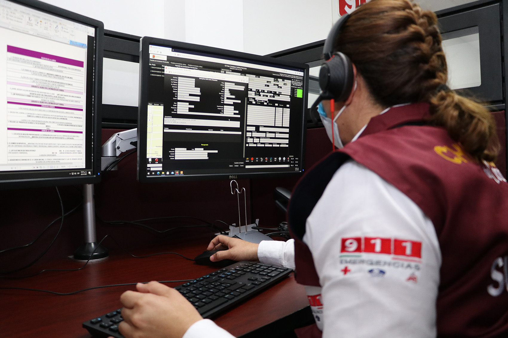

Dirección Estatal de coordinación, Control, Comando, Comunicación y Computo
Es importante que conozcan cómo esta estructurada la dirección de C5.
Esta dirección Cuenta actualmente con 2 certificaciones : La primera es Norma internacional ISO 90001-2015 Sistema de Gestión de la calidad, el cual se enfoca al cliente
La segunda es CALEA

En el menu de arriba podra ubicar diferentes opciones de menu donde encontrara información de CALEA y resumenes de su directivas que competen al CALLE 9-1-1, asi como otras opciones como cargo donde vera nuestas responsabilidades en cada cargo y municipios que nos compete.